01อ่านหน้านี้อย่างไร
ข้อมูลส่วนใหญ่มาจากหนังสือเสริม นิยาย และเกมสวมบทบาท (Rogue Trader, Deathwatch) ของ Games Workshop สรุปผ่าน Warhammer 40k Wiki หลายเผ่ามีข้อมูลเพียงไม่กี่บรรทัด เว็บนี้จึงเขียนเท่าที่มีในแหล่งทางการ ไม่แต่งเพิ่ม เผ่าที่ไม่มีภาพทางการจะแสดงเป็นสัญลักษณ์แทน
ทัพที่มีให้เล่นดูได้ที่ เนื้อเรื่องรายทัพ
02เผ่าโบราณและผู้สร้าง (6)
เผ่าที่มีอายุหลายสิบล้านปี และมีบทบาทสร้างเผ่าอื่นในกาแล็กซี

Old Ones / Slann
โอลด์วัน · สแลนน์ · แทบสูญพันธุ์เผ่าพลังจิตที่เก่าแก่ที่สุด ผู้สร้าง Webway และสร้างเผ่านักรบหลายเผ่าเพื่อสู้กับ Necrons ใน War in Heaven Slann คือเผ่าครึ่งบกครึ่งน้ำที่มีความเกี่ยวพันลึกลับกับ Old Ones และอ้างว่าเป็นเผ่าที่เก่าแก่ที่สุด
Jokaero
โจแกโร · ยังมีอยู่ดูเหมือนลิงอุรังอุตังขนส้ม ไม่มีภาษาพูด แต่เป็นอัจฉริยะด้านเทคโนโลยีและอาวุธขนาดเล็ก ถูก Old Ones สร้างขึ้นในยุค War in Heaven Inquisitor บางคนเลี้ยงไว้เป็นช่างอาวุธ
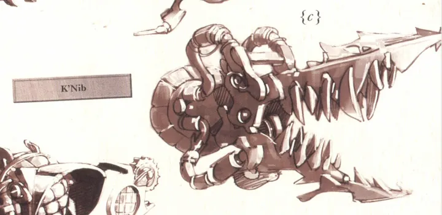
K'Nib
เคนิบ · ไม่แน่ชัดแทบไม่มีข้อมูล รู้เพียงว่ามี 10 แขนขา และนักวิชาการเชื่อว่าเป็นหนึ่งในเผ่านักรบที่ Old Ones เลี้ยงดูไว้
Rashan
ราชาน · ไม่แน่ชัดแทบไม่มีข้อมูล เชื่อว่าเป็นเผ่านักรบอีกเผ่าหนึ่งของ Old Ones

Krork
ครอร์ก · เสื่อมถอยเป็น Orksเผ่านักรบที่ Old Ones สร้างเพื่อต่อสู้กับ Necrons บรรพบุรุษของ Orks ในปัจจุบัน (ดู Orks)

Watchers in the Dark
วอทเชอร์ อิน เดอะ ดาร์ก · ยังมีอยู่สิ่งมีชีวิตตัวเล็กจากป่า Caliban ที่รับใช้ Dark Angels อย่างเงียบ ๆ มีพลังจิตป้องกันตัวที่ทรงพลัง
03เผ่าที่เป็นภัยร้ายแรง (23)
เผ่าที่ Inquisition จัดเป็นภัยต่อมนุษยชาติ — หลายเผ่ามีพลังเกี่ยวข้องกับ Warp
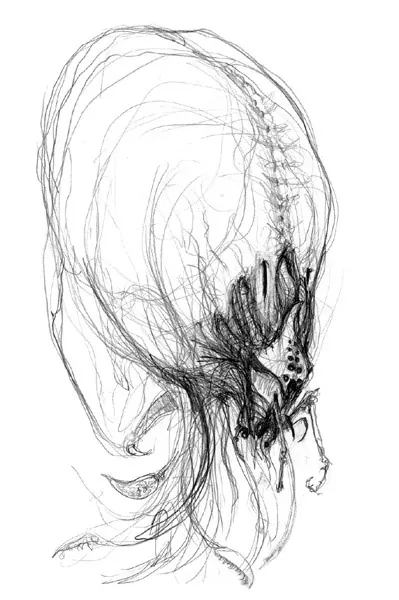
Enslavers
เอนสเลฟเวอร์ · ภัยระดับสูงสิ่งมีชีวิตจากมิติอื่นหน้าตาเหมือนลูกผสมแมงกะพรุนกับแมงมุม ควบคุมจิตของผู้ใช้พลังจิตให้กลายเป็น "ประตู" ให้พวกมันเข้ามาได้มากขึ้น แล้วเริ่มควบคุมคนธรรมดาจนขยายตัวแบบทวีคูณ มีส่วนทำให้ Old Ones ล่มสลาย
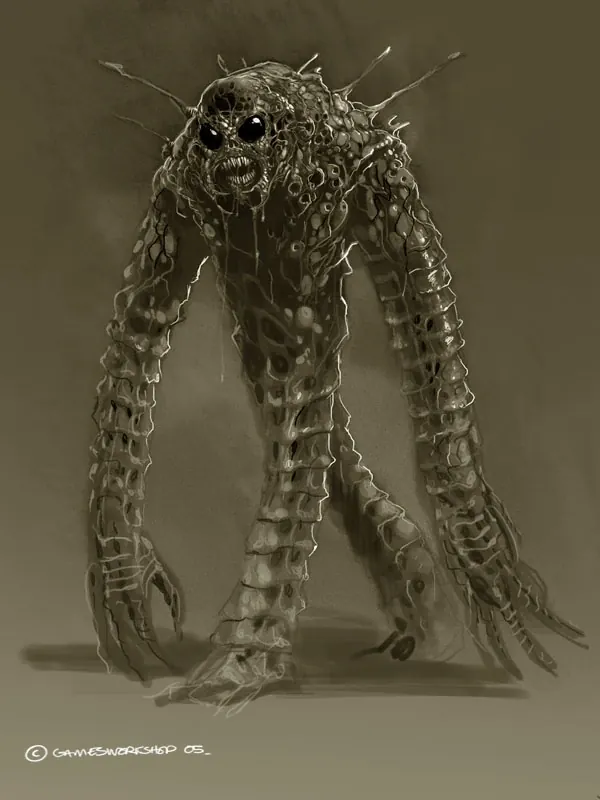
Hrud
ฮรุด · ยังมีอยู่เผ่าที่อาศัยใต้ดิน มีพลังลึกลับ (น่าจะเกี่ยวกับ Warp) ที่ทำให้สิ่งมีชีวิตแก่ลงอย่างรวดเร็วและวัตถุผุพังเมื่อเข้าใกล้ นักวิชาการยังเถียงกันว่ามีสองเผ่าที่ถูกเรียกด้วยชื่อนี้
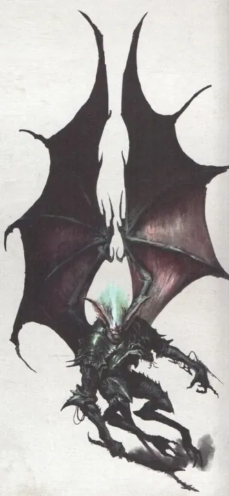
Khrave
เครฟ · ยังมีอยู่เผ่าคล้ายค้างคาวที่มีพลังจิตรุนแรง ควบคุมประชากรทั้งดาวแล้วกินเป็นอาหาร ในยุค Age of Strife จับดาวมนุษย์ใกล้ Ghoul Stars เป็นทาส บางตัวแข็งแรงเกิน Space Marine
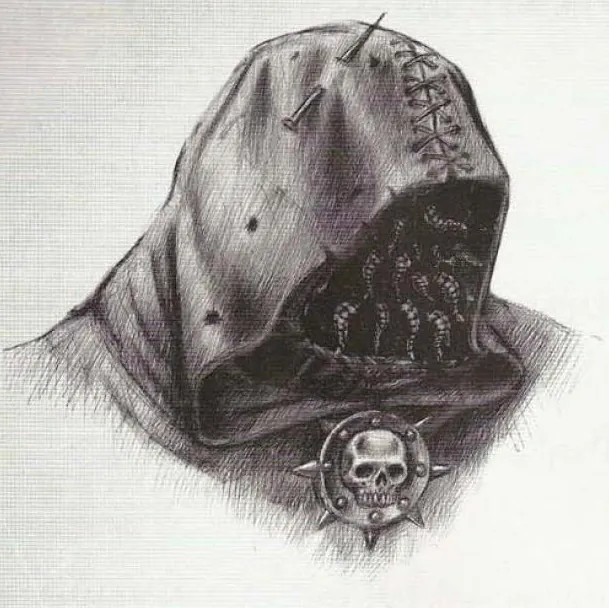
Slaugth
สลอธ · ยังมีอยู่"มนุษย์หนอน" หรือ "ผู้กินความฝัน" หนึ่งในเผ่าที่ชั่วร้ายที่สุด คนส่วนใหญ่คิดว่าเป็นตำนาน แต่ Ordo Xenos มีหลักฐานการพบเจอมากมาย
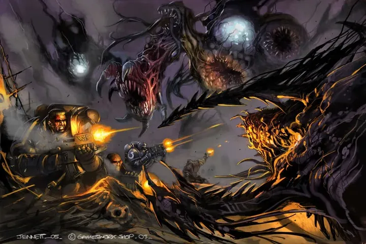
Umbra
อัมบรา · ยังมีอยู่ดูเหมือนลูกบอลสีดำ ควบคุมเงาเป็นอาวุธ เกี่ยวข้องกับ Warp และมักพบใกล้เครื่องยนต์ Warp ของยาน เกลียดแสง
Barghesi
บาร์เกซี · ถูกกักขังในภูมิภาคเผ่าที่ก้าวร้าวรุนแรงมากในเขต Grendl Stars ถูก Iron Lords Chapter ปิดล้อมไว้ Drukhari ชอบจับไปเป็นสัตว์รบ
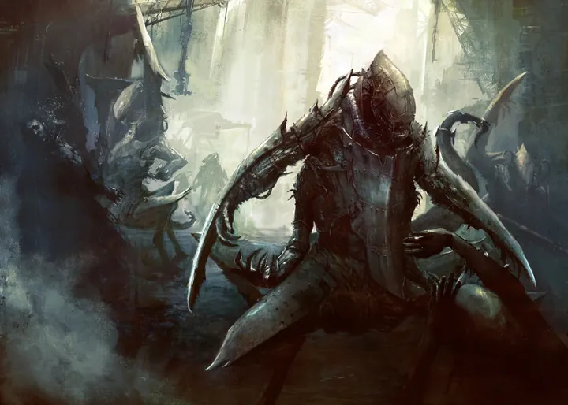
Rak'Gol
ราคโกล · ภัยใหม่โจรอวกาศแปดแขนขาในเขต Koronus Expanse ร่างกายผสมเครื่องจักรบิดเบี้ยว โจมตียานและอาณานิคมอย่างโหดร้ายแล้วหายไป
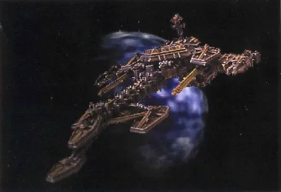
Fra'al
ฟราอัล · ยังมีอยู่เผ่าพลังจิตเทคโนโลยีสูงในเขต Gothic Sector Ordo Xenos ห้ามเผยแพร่ข้อมูลอย่างเข้มงวด เรียกมนุษย์ว่า "Imp'ral" และชอบลักลอบขายเทคโนโลยีให้มนุษย์
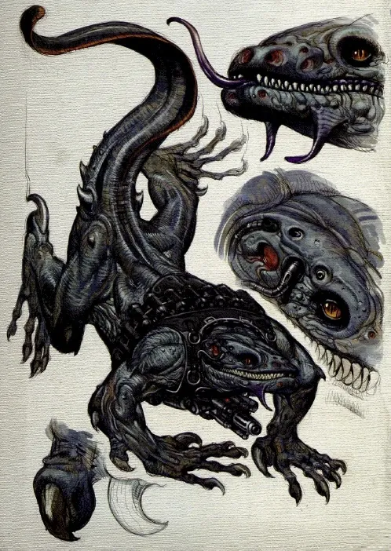
Loxatl
ล็อกซาทล์ · ยังมีอยู่สัตว์เลื้อยคลานสี่ขาผิวลื่น ตัวใหญ่กว่ามนุษย์ ทำงานเป็นทหารรับจ้างให้โจรสลัดและผู้ทรยศ
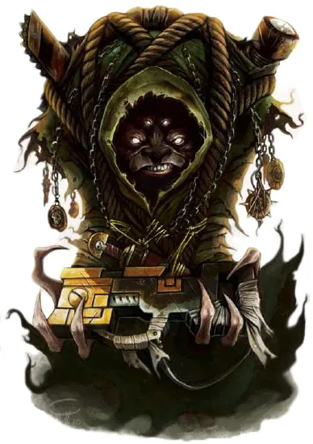
Stryxis
สตริกซิส · ยังมีอยู่พ่อค้าเร่ร่อนหน้าตาน่าเกลียด ไม่น่าไว้ใจ บางครั้งเป็นโจรและพ่อค้าทาส สะสมของแปลกทุกชนิด
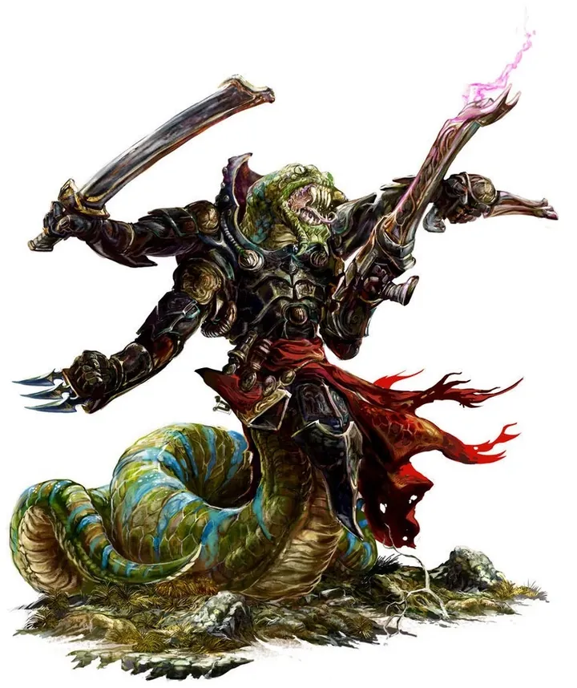
Sslyth
สลิธ · ยังมีอยู่สัตว์เลื้อยคลานครึ่งงูหลายแขน เป็นทหารรับจ้างและองครักษ์ที่ Drukhari ไว้ใจที่สุด
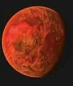
Thexians
เทกเซียน · ยังมีอยู่ผู้ปกครอง Thexian Trade Empire ปรับร่างได้สองแบบ เชี่ยวชาญการชักจูงและแทรกซึมในอารยธรรม Loxatl และ Nicassar
Xenarch
เซนาร์ก · ยังมีอยู่เผ่าที่บูชา Warp สร้างพลังงานไฟฟ้า-พลาสมาจากร่างกายตัวเอง อาวุธ Conduction Spine ของพวกเขาเป็นที่ต้องการของจักรวรรดิ
Draxian Hegemony
ดรากเซียน · ยังมีอยู่อาณาจักรเอเลียนรุ่นใหม่ที่เริ่มขยายตัวรุกล้ำจักรวรรดิ เคยปะทะกับ Red Talons Chapter
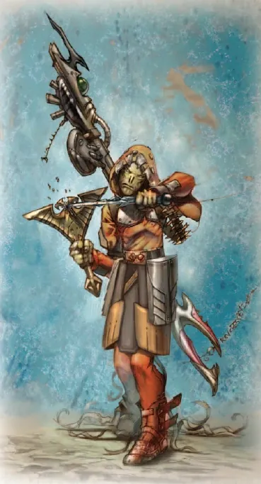
Enoulian
อีนูเลียน · ยังมีอยู่เผ่าตัวเล็กผิวเหลืองซีด หน้าแทบไม่มีลักษณะ สื่อสารด้วยเสียงแหลมและภาษามือ ใช้อาวุธซับซ้อน
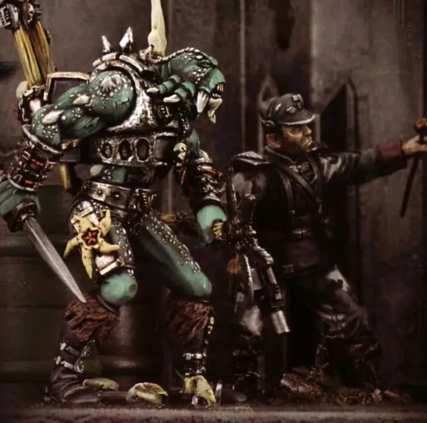
Viskeons
วิสคีออน · ใกล้สูญพันธุ์เผ่านักรบผิวน้ำเงินเลือดเย็น พ่นกรดได้ ดูดพลังงานจากความร้อนแล้วเคลื่อนไหวเร็วในเวลากลางคืน และงอกแขนขาใหม่ได้ ใกล้สูญพันธุ์
Cryptos
คริปทอส · ยังมีอยู่สิ่งมีชีวิตจากอวกาศมืดที่เป็นกลุ่มควันสีเขียว ผ่านวัตถุแข็งได้ และสิงร่างมนุษย์เพื่อทำตามเป้าหมายที่ไม่มีใครเข้าใจ
Jehangir
เจฮังกีร์ · ยังมีอยู่เผ่าป่าเถื่อนในเขต Tears of Piruz ที่ Cowled Wardens Chapter ได้รับมอบหมายให้กวาดล้าง
Haruspex
ฮารุสเพกซ์ · ยังมีอยู่โจรเอเลียนจาก Slinnar Drift เดินทางเป็นฝูง นำโดย "Lifeseeker"
Sardonites
ซาร์โดไนต์ · ยังมีอยู่เผ่าคล้ายกิ้งก่าจาก Segmentum Tempestus ยานโจรใช้ปืน Proton Disruptor ทำลายระบบไฟฟ้าของยาน
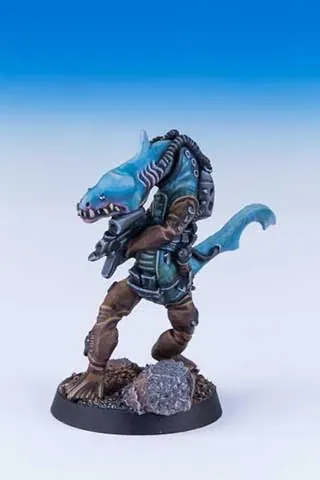
Saharduin
ซาฮาร์ดูอิน · ยังมีอยู่เผ่าครึ่งบกครึ่งน้ำมีเหงือก ทหาร "Piscean Warriors" ใช้ดาบคลื่น ดินแดนถูก Space Wolves พิชิตในยุค Great Crusade
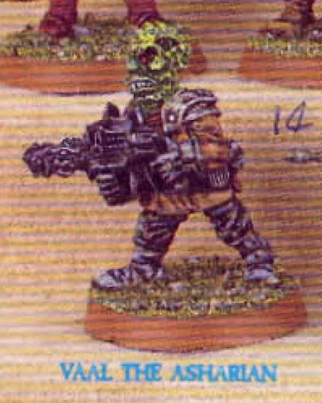
Asharian
อาชาเรียน · ไม่แน่ชัดผิวเขียว หัวโต ตาแดง รู้จักเพียงโจรสลัดชื่อ Vaal the Asharian
Malgreth
มัลเกรธ · ไม่แน่ชัดแทบไม่มีข้อมูล Deathwatch ต้องสอบสวนทุกครั้งที่มีรายงานการพบเห็น
04เผ่าในสังกัด T'au Empire (12)
T'au รับเผ่าอื่นเข้าร่วม "Greater Good" มากมาย บางเผ่ามีบทบาทในกองทัพ บางเผ่าทำงานด้านอื่น

Kroot
ครูต · พันธมิตร T'auนักรบคล้ายนกที่วิวัฒนาการโดยกินศัตรูแล้วดูดซับลักษณะพันธุกรรม เป็นทหารรับจ้างที่มีชื่อที่สุดของ T'au

Vespid
เวสปิด (Stingwings) · พันธมิตร T'auแมลงมีปีกจากดาวแก๊ส Vespid ใช้อาวุธคริสตัล T'au เรียกว่า "Mal'kor"
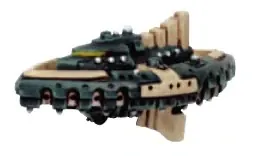
Nicassar
นิคาสซาร์ · พันธมิตร T'auผู้ใช้พลังจิตที่ชอบท่องจักรวาล เป็นเผ่าแรกที่ไม่ใช่ T'au ที่เข้าร่วมจักรวรรดิ ให้ยานสำรวจแก่กองเรือ
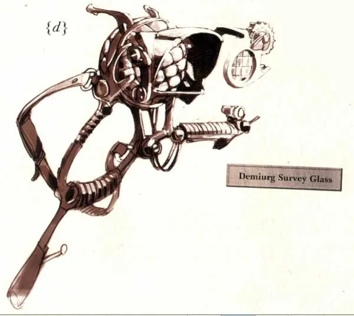
Demiurg
เดมิเอิร์ก · Votann (พันธมิตร T'au)เคยถูกเข้าใจว่าเป็นเผ่าคนแคระนักขุดแร่ ภายหลังเผยว่าเป็นกองเรือ "Prospect" ของ Leagues of Votann — T'au ได้ปืนไอออนจากพวกเขา
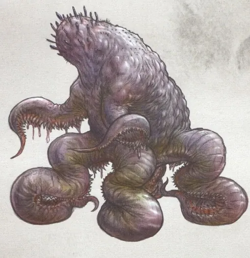
Galgs
กัลก์ · พันธมิตร T'auจากดาว Adummin ยินดีเข้าร่วม Greater Good บางส่วนเป็นทหารเสริมของวรรณะไฟ
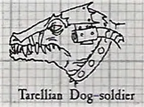
Tarellians
ทาเรลเลียน (Dog-soldiers) · พันธมิตร T'auทหารรับจ้างของ T'au มนุษย์เคยทิ้งระเบิดไวรัสใส่ดาวของพวกเขาในยุค Great Crusade จึงเกลียดมนุษย์จนถึงวันนี้
Thraxians
แทรกเซียน · พันธมิตร T'auเผ่าหลายแขนเปลือกแข็งที่ถูกผนวกเข้า T'au Empire
Greet
กรีต · พันธมิตร T'auเผ่าไร้กระดูกสันหลังจากดาวมหาสมุทร Isla'su ยอมให้ T'au สร้างโรงงานลอยน้ำบนทะเล
Charpactin
ชาร์แพกติน · พันธมิตร T'auเชื้อราที่มีความคิด สื่อสารด้วยแสงอัลตราไวโอเลตที่ทำให้สิ่งมีชีวิตอื่นเชื่อง T'au ใช้พวกมันควบคุมความภักดีของทหาร
Ji'atrix
จิอาทริกซ์ · พันธมิตร T'auเผ่าที่คล้ายวิญญาณ ชำนาญการเดินทางในอวกาศ ใช้เป็นหน่วยสำรวจเส้นทาง
Anthrazods
แอนทราซอด · พันธมิตร T'auแข็งแรงแต่ไม่ฉลาด ถูกใช้ทำงานเหมืองในแถบดาวเคราะห์น้อย
Formosians
ฟอร์โมเซียน · พันธมิตร T'auถูกผนวกในปี 896.M40 จากการเจรจาของ "Golden Ambassador" แห่ง Dal'yth
05เผ่าที่สูญพันธุ์หรือถูกกวาดล้าง (14)
หลายเผ่าถูกจักรวรรดิกวาดล้างตั้งแต่ยุค Great Crusade — บางเผ่าทิ้งมรดกไว้ในเนื้อเรื่อง
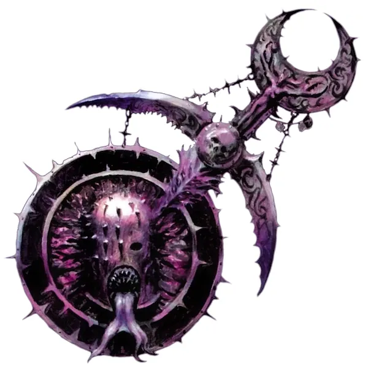
Laer
แลร์ · ถูกกวาดล้างเผ่าสัตว์เลื้อยคลานบนดาวมหาสมุทร Laeran ที่บูชา Slaanesh และแสวงหาความสมบูรณ์แบบ Emperor's Children กวาดล้างพวกเขา และ Fulgrim ได้ดาบต้องสาปจากวิหารของพวกเขา
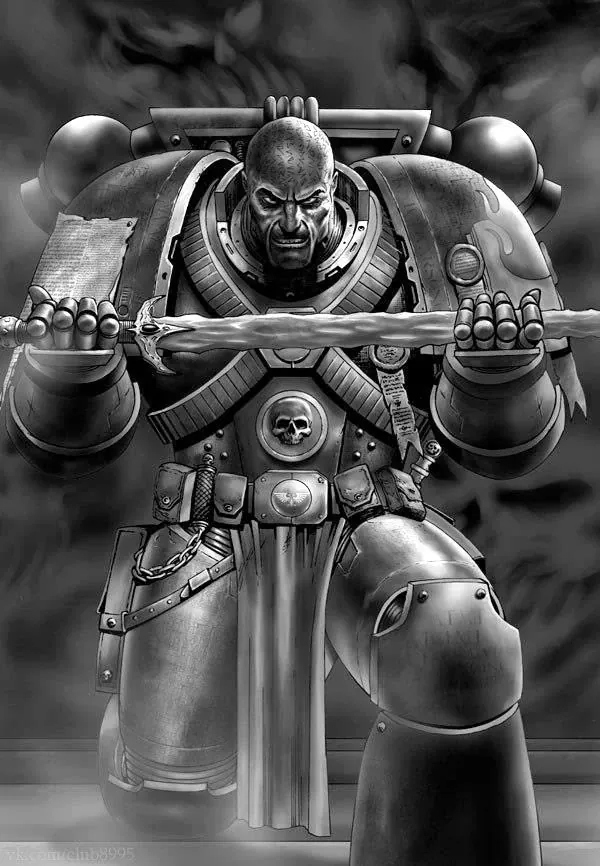
Kinebrach
คิเนแบรก · ไม่แน่ชัดเผ่าคล้ายลิงที่เคยมีอาณาจักรยิ่งใหญ่ ภายหลังเป็นพันธมิตรกับมนุษย์ Interex ผู้สร้าง Anathame มีดที่ Erebus ใช้แทง Horus บนดวงจันทร์ Davin
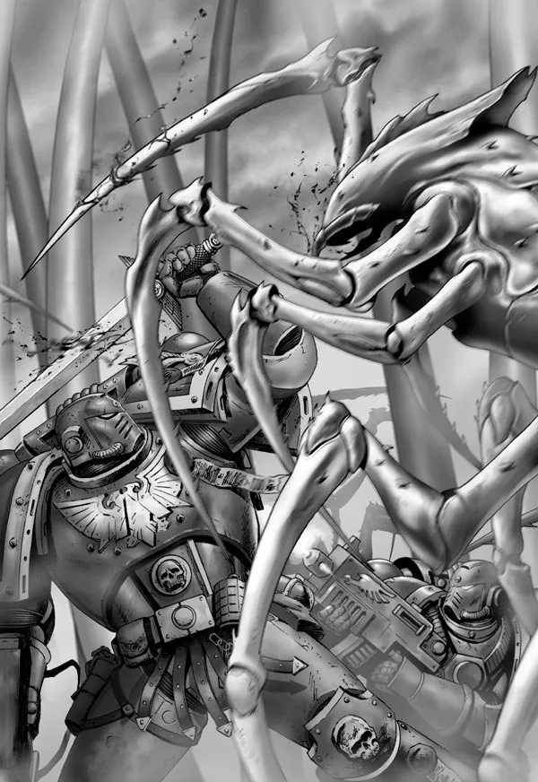
Megarachnids
เมการาคนิด · สูญพันธุ์แมงมุมยักษ์ที่มีความคิด ถูก Interex เนรเทศไปดาว Murder Luna Wolves และ Blood Angels ต้องต่อสู้กับพวกมันในยุค Great Crusade
Nephilim
เนฟิลิม · ถูกกวาดล้างสิ่งมีชีวิตสูงกว่า Space Marine สองเท่า กินอารมณ์ความศรัทธาของมนุษย์บนดาว Melchior และดาวรอบข้าง ถูก Blood Angels และ Luna Wolves ปราบ
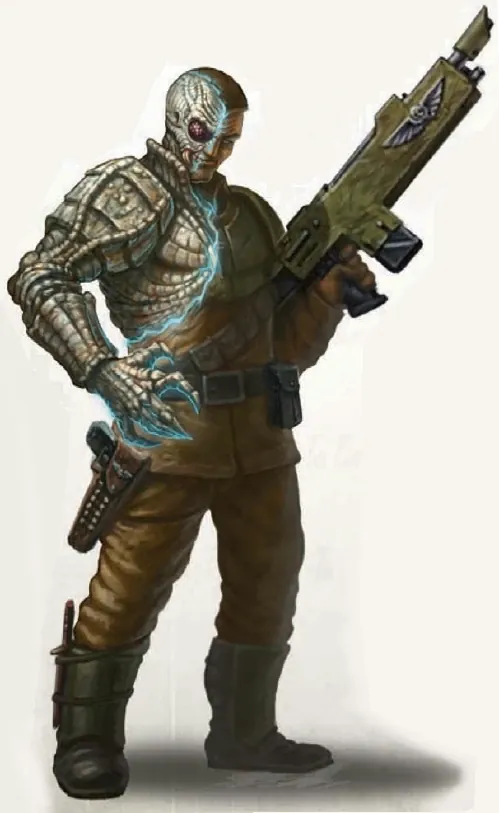
Lacrymole
แลคริโมล · เกือบสูญพันธุ์เผ่าดูดเลือดที่เปลี่ยนรูปร่างได้ เกือบสูญพันธุ์ในยุค Great Crusade ผู้รอดยังล่ามนุษย์ ในยุค Heresy หนึ่งในนั้นปลอมตัวเป็น Custodes เพื่อลอบสังหาร
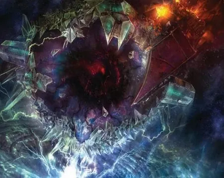
Yu'Vath
ยูวาธ · ถูกกวาดล้างเผ่าที่รับใช้ Chaos สร้างอาณาจักรด้วยเวทมนตร์และการบูชาปีศาจ Saint Drusus ปราบพวกเขาในสงคราม Angevin Crusade
Muhlari
มูลาริ · ถูกกวาดล้างเผ่าที่มีความรู้ครอบคลุมทั้งกาแล็กซี ถูก Deathwatch กวาดล้างที่ Zarabek ผลึกข้อมูลถูกบดผสมเถ้าแล้วยิงเข้าดวงอาทิตย์
Keylekid
คีเลคิด · ถูกกวาดล้างเผ่าสัตว์เลื้อยคลานที่เชี่ยวชาญการรบ ถูก Luna Wolves กวาดล้างในสงครามอันยืดเยื้อยุค Great Crusade
Mitu Conglomerate
มิตู · ถูกกวาดล้างอาณาจักรเอเลียนที่ครองดาวมนุษย์ในยุค Age of Strife ถูกบดขยี้ในยุค Great Crusade
Overseers
โอเวอร์เซียร์ · ถูกกวาดล้างเผ่าเครื่องจักรที่มีความคิดบนดาว Dahinta Luna Wolves กวาดล้างเพราะจักรพรรดิห้ามเครื่องจักรที่มีความคิด
Gykon
ไกคอน · ไม่แน่ชัดถูก Horus กล่าวถึงในยุค Great Crusade หลังเหตุการณ์ปีศาจสิงบนดาว 63-19 มีข้อมูลน้อยมาก
Cimmeriac
ซิมเมอเรียก · ถูกกวาดล้างร่วมพันธมิตรต้าน Hive Fleet Jormungandr แต่อีกไม่ถึง 5 ปีถูกทำลายโดยผู้นำพันธมิตรเอง
Donarathi & Vassalians
โดนาราธิ · วาสซาเลียน · ยังมีอยู่สองเผ่าที่เคยทำสงครามกัน แต่สงบศึกชั่วคราวร่วมต้าน Tyranids ในยุทธการ Black Nebula (995.M41)
Saruthi
ซารูธิ · ยังมีอยู่เผ่าที่ร่างกายไม่สมมาตรเพราะการกลายพันธุ์จาก Chaos ใช้ประตูมิติ "Tetragate" แทนยานอวกาศ
06มนุษย์นอกจักรวรรดิและ Abhuman (10)
ไม่ใช่มนุษย์ทุกกลุ่มจะอยู่ใต้จักรวรรดิ และมีมนุษย์กลายพันธุ์ที่ได้รับการยอมรับ (Abhuman)
Interex
อินเตอร์เรกซ์ · ไม่แน่ชัดอารยธรรมมนุษย์ก้าวหน้า 30 ระบบดาวที่เลือกอยู่ร่วมกับเอเลียน ขัดแย้งกับ Luna Wolves จนเกิดสงคราม — และเป็นที่มาของมีด Anathame
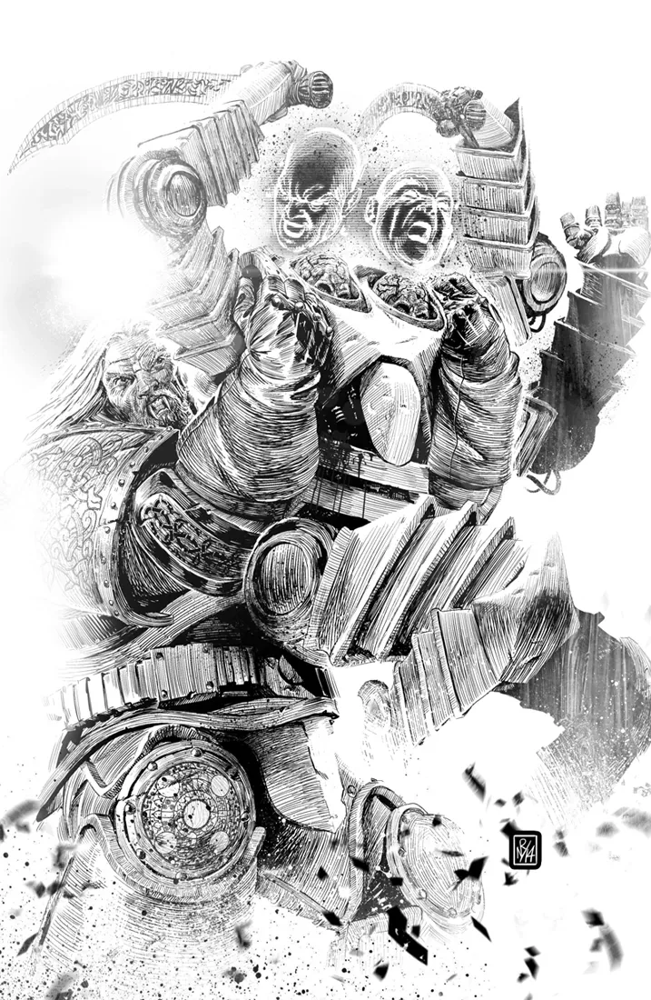
Olamic Quietude
โอลามิก ไควเอทูด · ถูกกวาดล้างอารยธรรมมนุษย์ไซบอร์กที่หลอมรวมกับเทคโนโลยีจนแทบไม่เหลือความเป็นมนุษย์ อยู่ใต้แผ่นน้ำแข็งบนดาวร้าง
Diasporex
ไดแอสโพเรกซ์ · ถูกกวาดล้างสหพันธ์เร่ร่อนของมนุษย์และเอเลียนที่อาศัยบนกองยานโบราณ ถูก Iron Hands พบในยุค Great Crusade
Men of Gold · Stone · Iron
เมน ออฟ โกลด์ / สโตน / ไอรอน · ตำนานตำนานจากยุค Dark Age of Technology: Men of Gold สร้าง Men of Stone เพื่อช่วยสำรวจอวกาศ แล้ว Men of Stone สร้างหุ่นยนต์ AI "Men of Iron" ที่ภายหลังกบฏต่อมนุษย์ (ดู ยุคโบราณ)
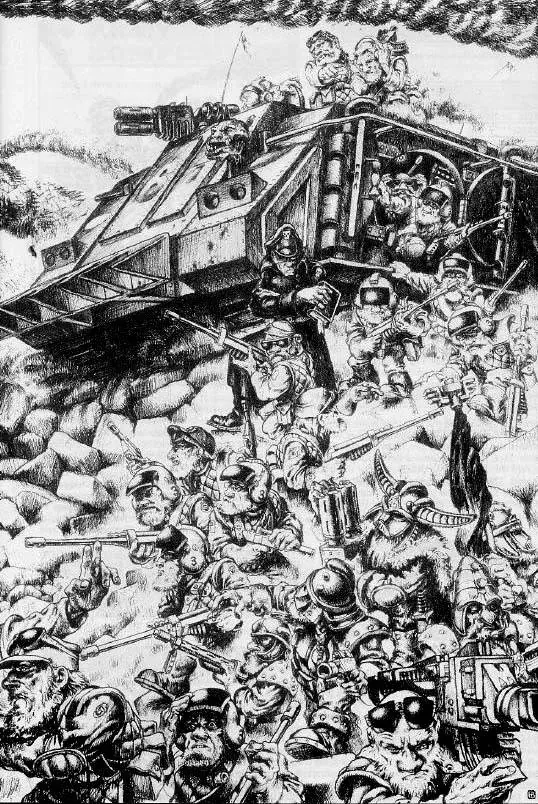
Squats (ยุคเก่า)
สควอท · เนื้อเรื่องเก่ามนุษย์ร่างเตี้ยแข็งแรงจากดาวแรงโน้มถ่วงสูงใกล้ใจกลางกาแล็กซี ในเนื้อเรื่องเก่าถูกบอกว่าถูก Tyranids กิน — ปัจจุบันถูกแทนที่ด้วย Leagues of Votann
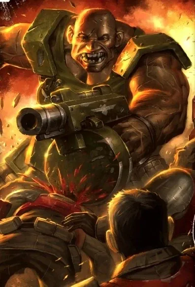
Ogryn
โอกริน · Abhumanมนุษย์กลายพันธุ์ร่างยักษ์จากดาวแรงโน้มถ่วงสูง ภักดีและแข็งแรงแต่ฉลาดน้อย รับใช้ Astra Militarum
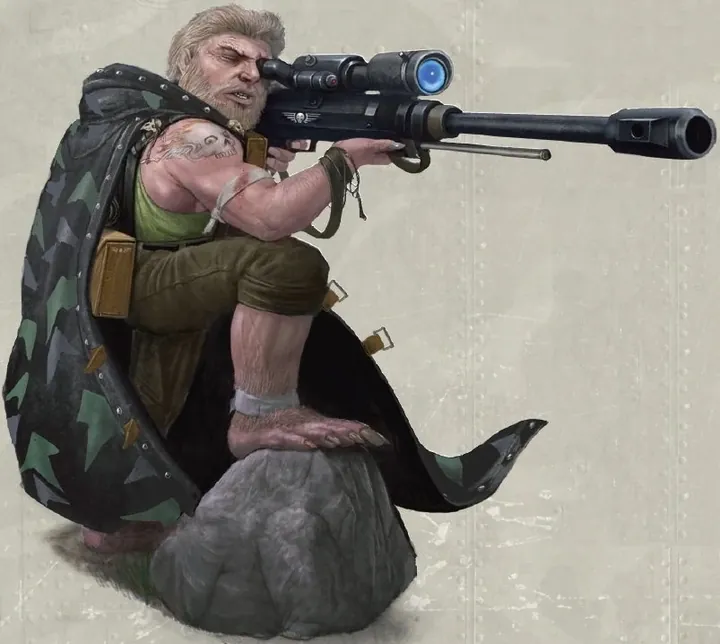
Ratling
แรตลิง · Abhumanมนุษย์ร่างเล็ก ยิงแม่นเป็นเลิศ ชอบกินและขโมยของ ได้รับสัญชาติจักรวรรดิเต็ม
Ghilliam
กิลเลียม · มนุษย์กลายพันธุ์ลูกเรือที่กลายพันธุ์และอาศัยในส่วนลึกของยาน ขโมยของและบางครั้งกินคน
Gnostari & Kreg
กนอสตาริ · เครก · Votannเคยถูกเข้าใจว่าเป็นเผ่าเอเลียน แต่จริง ๆ คือกองเรือ Prospect ของ Leagues of Votann
Cabal
คาบาล · ไม่แน่ชัดองค์กรลับที่รวมสมาชิกจากกว่าพันเผ่า รวมถึง Aeldari และมนุษย์ ทำนายอนาคตและแทรกแซงเพื่อทำลาย Chaos — เป็นผู้บอก Alpha Legion ว่าการชนะของ Horus จะดีกว่า
07สิ่งมีชีวิตจาก Warp (4)
ไม่ใช่ปีศาจของเทพ Chaos แต่เป็นสิ่งมีชีวิตที่เกิดหรืออาศัยใน Warp
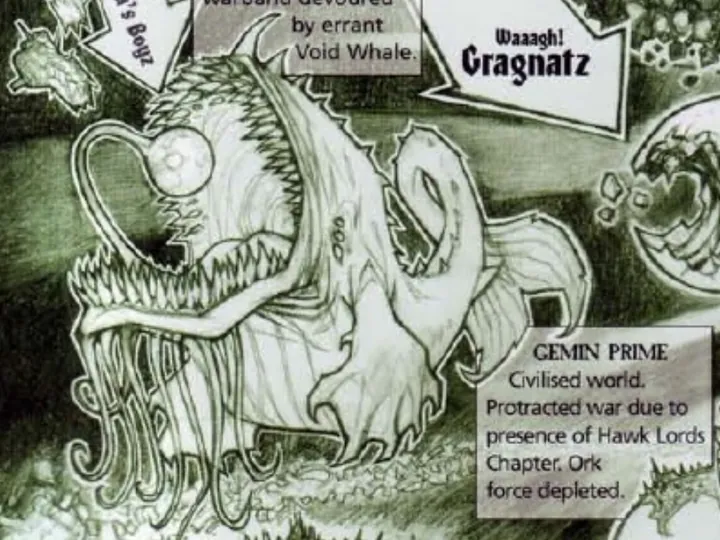
Void Whale
วาฬอวกาศ · สัตว์สัตว์ยักษ์ยาวเกือบ 12,000 กิโลเมตร ว่ายได้ทั้งในอวกาศและ Warp ภายในตัวมีระบบนิเวศของตัวเอง
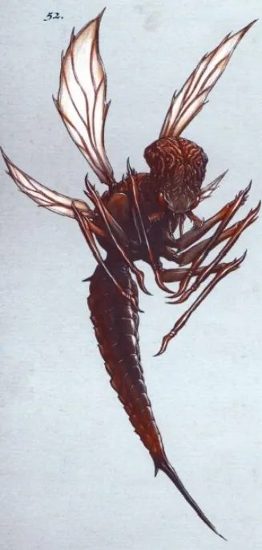
Psychneuein
ไซก์นูไอน์ · สัตว์แมลงคล้ายตัวต่อยาว 2.5 เมตรจาก Warp วางไข่ในสมองของผู้ใช้พลังจิตที่ไม่มีการป้องกัน
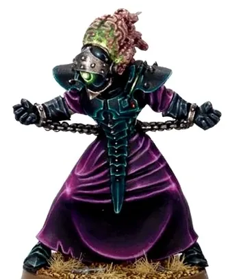
Medusae
เมดูซี · ปรสิตปรสิตใน Webway หน้าตาเหมือนสมองซ้อนกัน กินความฝันและความกลัว Drukhari บางคนสวมไว้บนหัว
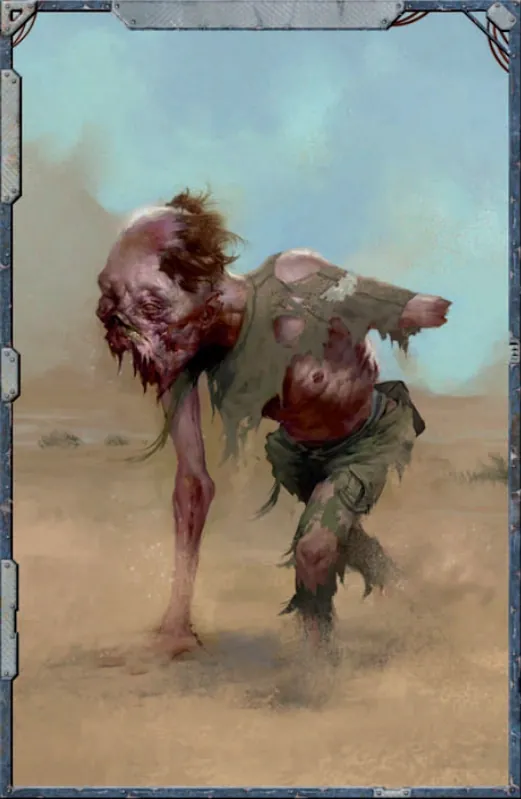
Unquenched
อันเควนช์ · ถูกสาปอดีตผู้ใช้พลังจิตที่ถูกสาปให้กระหายน้ำตลอดไป ดูดความชื้นจากร่างเหยื่อได้ในไม่กี่วินาที
08สัตว์ร้ายที่มีชื่อเสียง (10)
สัตว์ที่ไม่มีความคิดแบบสิ่งมีชีวิตทรงปัญญา แต่ปรากฏบ่อยในเนื้อเรื่อง
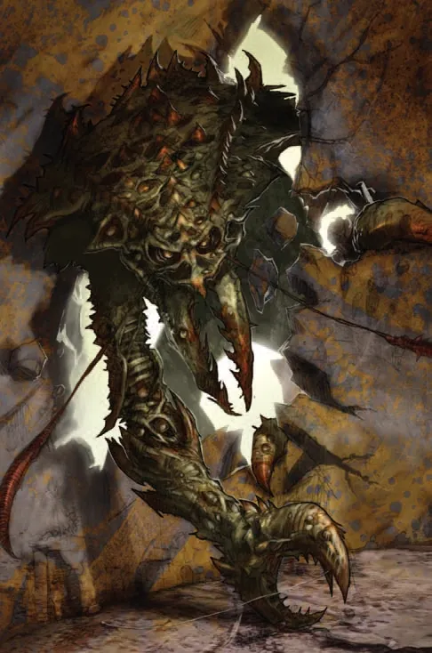
Ambull
แอมบูล · สัตว์สัตว์ขุดดินเปลือกแข็งสูงได้ถึง 4 เมตร กรงเล็บแข็งเหมือนเหล็ก อยู่เป็นครอบครัว
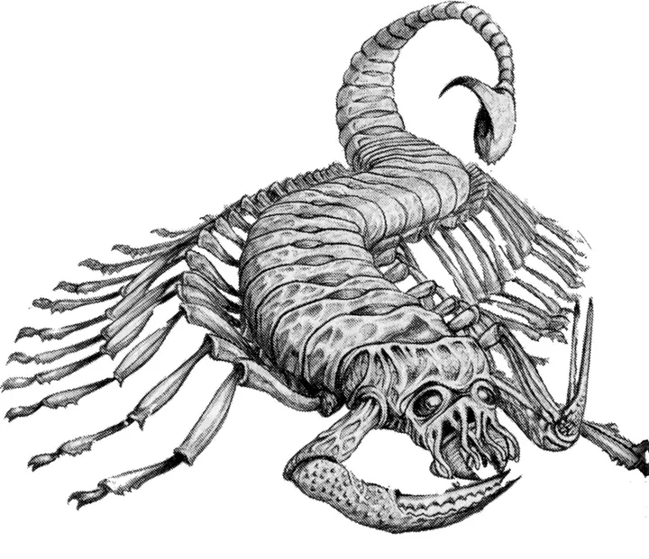
Catachan Devil
แคทาแชน เดวิล · สัตว์สัตว์คล้ายแมงป่องจากดาวป่า Catachan ยาวได้ถึง 30 เมตร ขาได้ 30 คู่ — ชื่อที่ทหาร Catachan ใช้ตั้งเป็นฉายา
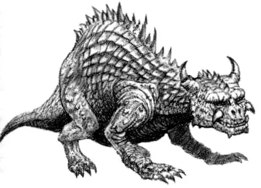
Grox
กร็อกซ์ · ปศุสัตว์สัตว์เลื้อยคลานก้าวร้าวที่เลี้ยงเป็นอาหารหลักของจักรวรรดิ อยู่ได้ทุกสภาพอากาศ และกินได้แทบทุกส่วน
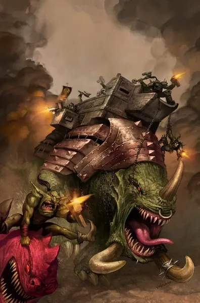
Squiggoth
สควิกกอธ · สัตว์ของ OrksSquig ขนาดยักษ์ที่ Orks ใช้บรรทุกของและทหาร เป็นสิ่งมีชีวิตคล้ายเชื้อรา
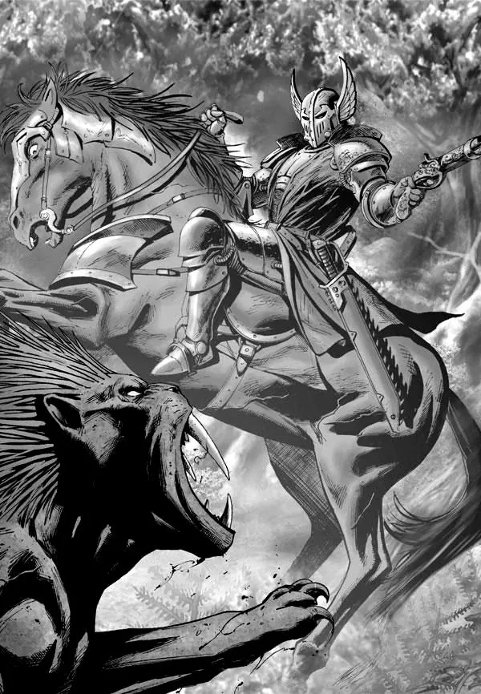
Great Beasts of Caliban
สัตว์ร้ายแห่ง Caliban · สูญพันธุ์สัตว์ประหลาดบนดาว Caliban ที่ Lion และอัศวินกวาดล้าง ภายหลังพบว่าเกิดจากการแปดเปื้อนของ Chaos
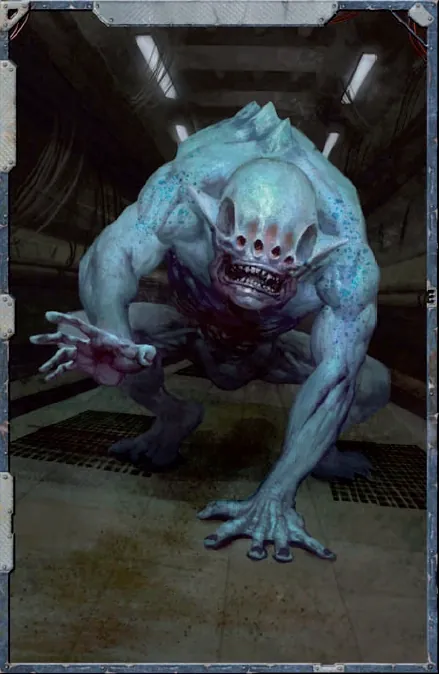
Ur-Ghul
เออร์-กูล · สัตว์นักล่าไร้ตาจากเมือง Shaa-Dom ใน Webway Archon ของ Drukhari ใช้ไล่ล่าศัตรู
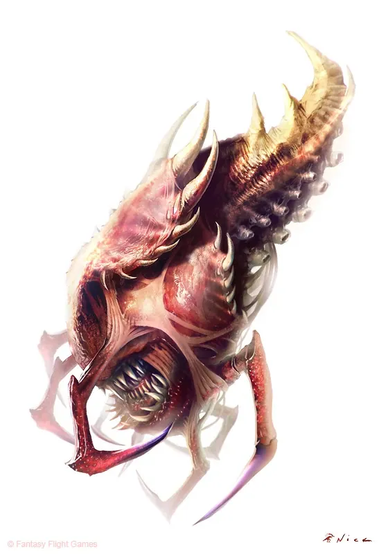
Thornmaw
ธอร์นมอว์ · สัตว์สัตว์ประหลาดรูปหยดน้ำ ไม่มีผิว เต็มไปด้วยหนาม ประดับเขาด้วยซากเหยื่อ
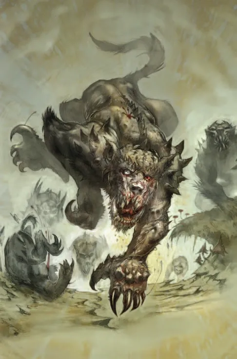
Cruorian War Beast
ครูโอเรียน · สัตว์สัตว์สงครามสี่ขาจากซากปรักหักพังเอเลียนในเขต Calixis ไม่กลัวแม้แต่กองทัพทั้งกอง
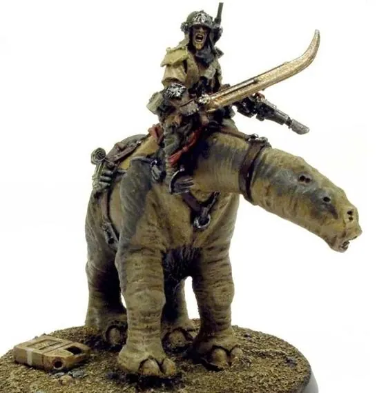
Mukaali
มูกาลี · สัตว์พาหนะสัตว์ทะเลทรายที่ทหาร Tallarn ใช้ขี่
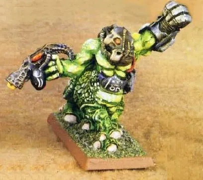
Zoat
โซแอต · ใต้ Hive Mindเผ่าครึ่งคนครึ่งม้าคล้ายสัตว์เลื้อยคลานที่ Tyranids ใช้เป็น "นักการทูต" เพราะคิดและพูดได้
09แหล่งอ้างอิง
บทความ Warhammer 40k Wiki หมวด Races และ Xenos (ตรวจ ณ กันยายน 2026)